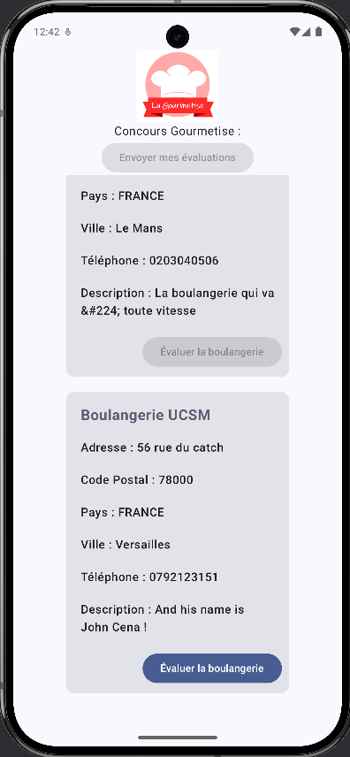
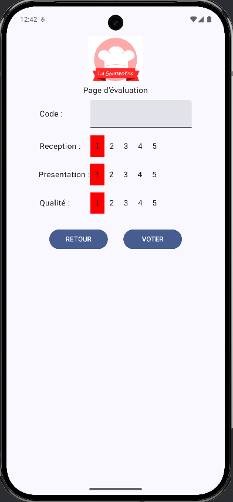

Présentation de mes Projets
Projet du Stage de Première Année
Objectif du projet
Durant mon stage de Première Année, on m'a donné 4 semaines pour ajouter une section Signataire permettant de gérer les signatures sur les
documents PDF générés sur la version Web SAAS du logiciel nommé DMDLog.
Présentation du logiciel
DMDLog est un logiciel métier qui permet de traiter, gérer et éditer les documents de transport de marchandises dangeureuses.
Organisation du travail
J’ai participé aux réunions d’ouverture et de fermeture de sprint avec mon maître de stage, le scrum master et le
directeur commercial.
Le livrable était le code validé du ticket attribué, puis fusionné sur GitHub.
Conception et développement
J’ai commencé par réaliser un schéma de l’onglet Signataire, puis j’ai participé à la création des SPECS.
Ensuite, j’ai développé le front-end. Voici quelques images :
Développement Back-End
Avec mes collègues, nous avons créé la table Signataire dans la base de données via Prisma, ce qui m’a permis de développer la partie Back (API + BDD).
Intégration finale
Enfin, j’ai intégré les signataires aux autres modules pour permettre l’ajout automatique des signatures PDF.
Projet du Stage de Deuxième Année
Objectif du projet
Durant mon stage de Deuxième Année, j’ai travaillé sur un nouveau logiciel en début de développement.
J’ai eu 6 semaines pour créer les modules Contacts, Assistances, Formations et Contrats.
Présentation du logiciel
LogCSTMD est un outil métier qui permet de s'intégrer dans les obligations métiers d'un conseiller à la sécurité.
Organisation du travail
Comme en première année, j’ai participé aux réunions de sprint et livré du code validé puis fusionné sur GitHub.
Développement Front-End
Je me suis appuyé sur une maquette pour créer le front-end. Voici quelques images :
Développement Back-End
J’ai ensuite relié ces modules à la base de données existante et créé les routes API (CRUD).
Intégration finale
Pour finir, j’ai intégré ces modules au module Entreprise afin de pouvoir les associer à une entreprise.
Autres Projets
Multiburo
Projet visant à consulter et réserver des ressources d’un bâtiment fictif.
Développé en PHP avec une base de données HeidiSQL.
Scrabble
À partir d’une version fonctionnelle en C#, j’ai ajouté le mode 2 joueurs, la sauvegarde, l’historique, une API dictionnaire et une base HeidiSQL.
Gourmetise
Projet from scratch : avec un camarade, j’ai créé un site web Vue.js permettant de s’inscrire à un concours de boulangerie via une API Symfony connectée à une base HeidiSQL.
J’ai également développé une application mobile utilisant une base SQLite, permettant d’évaluer les boulangeries et d’envoyer les résultats vers la base HeidiSQL.


À la fin du concours, l’administrateur peut générer les résultats (top 3 des boulangeries) grâce aux notes envoyées par l’application mobile.